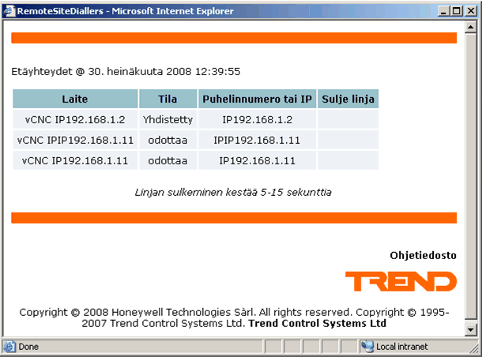

Voit tarvittaessa saada näkyviin tiedot palvelimen tilasta. Tämä on hyödyllistä ohjelmoijalle, jos ilmenee ongelmia.
Palvelimen tilan näyttämiseksi:
Napsauta Palvelimen tila. Status-sivu tulee näkyviin.
Kirjautuneena olevat työasemakäyttäjät (Client) voidaan kirjata ulos napsauttamalla Kirjaa käyttäjä ulos sivun kohdassa Etäkäyttäjät.
Näytettävät tiedot riippuvat käyttöoikeuksistasi. Jos sinulla on asianmukaiset käyttöoikeudet, Status-sivu sisältää Näytä etäyhteydet -painikkeen, joka avaa RemoteSiteDiallers-ikkunan, jossa on luettelo parhaillaan yhteydessä olevista etäkäyttäjistä ja josta voit katkaista yhteyden napsauttamalla sen vieressä olevaa painiketta Sulje linja.
